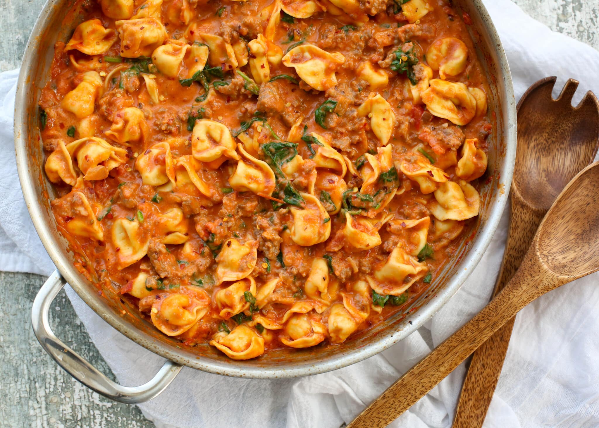

Sausage Tortellini

Description
This Italian Sausage Tortellini is made with cheese tortellini and fresh
Italian sausage in a homemade tomato cream sauce. It’s one of our
favorite tortellini recipes.
This Italian Sausage Tortellini is bursting with flavor.
It’s definitely one of those recipes that everyone would rave over
at a restaurant — but you can make it at home! Make this the next time you
want everyone to RAVE over your cooking!!
Ingredients
- ~1 lb ground Italian sausage
- 4-6 cloves minced garlic
- 1 medium or 1/2 large white or yellow onion
- 28 oz can diced tomatoes
- 1 to 1.5 cups heavy cream
- 1 to 1.5 cups chicken or vegetable broth
- ~20 oz refrigerated tortellini
- 2-4 large handfuls of spinach
- 1/4 cup chopped basil
- 1/4 cup shredded/grated parmesan
- Salt & Pepper to taste
- Oil for cooking onions/browning sausage
- Bonus: halved cherry/grape tomatoes, if desired
Instructions
- Place large deep frying pan over medium heat. Add a little oil to hot
pan (doesn’t take much, the sausage will release lots of oil/fat
when heated). Wait for oil to heat up (should slimmer slightly, or add
1 drop of water to see if it immediately sizzles). Add sausage and
onion, and brown the sausage. As sausage browns, break up into bite
sized pieces of desired size. When sausage is browned and onions are
slightly translucent, add garlic and Sautee until fragrant (30 seconds
or so, don’t burn it)
- Pour in undrained diced tomatoes, heavy cream, broth, and tortellini.
Bring to a steady simmmer, then reduce heat to a gentle simmer until
pasta is tender/heated through and sauce has reduced to your liking.
Add salt and pepper to taste, and any other spices (oregano, thyme,
rosemary). The sauce will continue to thicken as it cools and as you
add a few more ingredients. The tortellini is relatively resistant to
overcooking, just keep an eye on it as you get your sauce to desired
thickness. I find I like it best a little on the saucy/not too thick
side, but it’s good either way and is hard to mess up. Bonus: I
usually add in a good handful or two of halved cherry tomatoes for
some fresh flavor. Adding more cherry tomatoes will thin up the sauce
a bit.
- Add the handfuls of spinach and cook until wilted. This is easier to
do if the dish is still pretty saucy. I find it works best to add a
handful of spinach spread out of the top of the dish, then sort of
poke it down into the sauce so the spinach is mostly covered by
tortellini and other ingredients, let it sit for maybe 30 seconds,
stir, and repeat with a second handful of spinach. This dish can take
up a lot of spinach (3 or 4 large handfuls and still be tasty, up to
you how much you use). Add chopped basil and shredded parmesan cheese
and stir to combine. Remove from heat and top with a little more
parmesan cheese and let melt, if desired.
Notes
Don’t over think it. The amounts aren’t critical, just want to
nice ratio of various ingredients, pasta, sausage, sauce, etc.